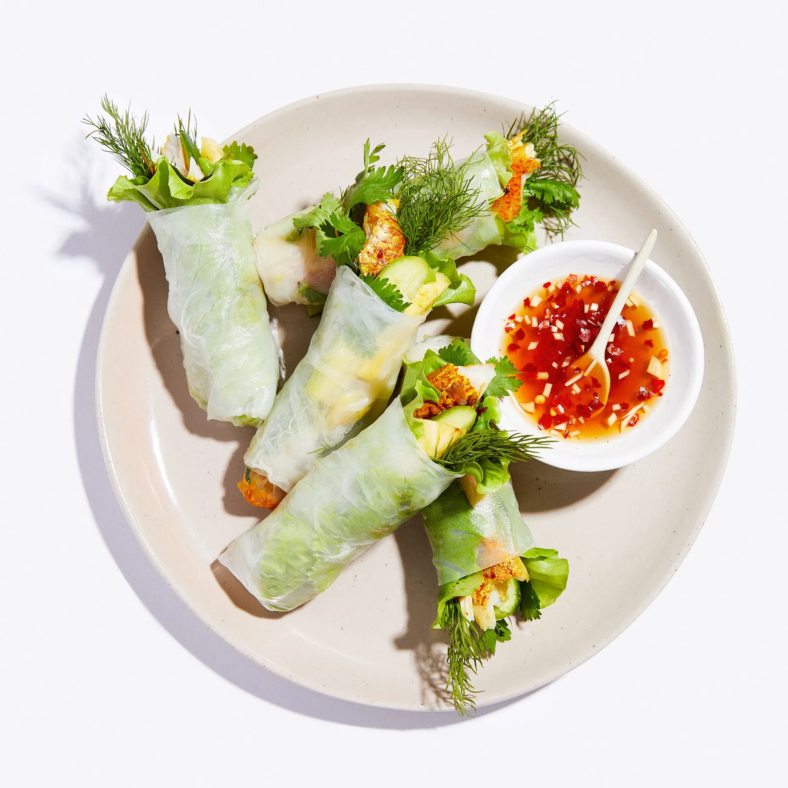

Welcome to Summer
Vietnamese Inspired Turmeric Fish Summer Rolls
A dish of fried fish seasoned with turmeric, shrimp paste, and dill that’s served over
vermicelli with lots of herbs and nước chấm, a fish sauce dressing. In Vietnam, summer roll dishes are usually
served deconstructed with platters of crisp greens, herbs, and
accoutrements so guests can assemble their own rolls.

4 SERVINGS
Ingredients
- 4 Persian cucumbers
- 1 pineapple
- 1 2" piece ginger
- 4-6 garlic cloves
- 1 tsp ground turmeric
- ½ tsp crushed red pepper flakes, plus more
- 1 lb white fish fillets (such as red snapper, hake, halibut, or tilapia), preferably skin-on
- 1 tbsp sugar
- 1 lime
- 1 tbsp vegetable oil
- 5 tbsp warm water
- 12 rice paper rounds
- kosher salt
- Tender lettuce (such as green leaf or Bibb) and tender herbs (such as cilantro, dill, and/or Thai
basil); for serving
Preparation
- Slice 4 Persian cucumbers lengthwise into planks that are about 3" long and 1/4"
thick. Cut off the
crown and the rounded bottom of 1 pineapple, creating two flat surfaces. Stand the
pineapple up,
then use your knife to cut away the skin, following the contours of the pineapple from top to
bottom. Cut your pineapple in four long pieces, then remove the core. Cut the pineapple plank
crosswise into short 1/4" pieces. Set aside.
- Peel and finely chop one 2" piece ginger and 4–6 garlic cloves.
(You should have about 2 Tbsp.
each.) Mix 1 tbsp finely chopped ginger, 1 tbsp finely chopped garlic, tsp ground turmeric,
2 tbsp fish sauce, ½ tsp crushed red pepper flakes, and a pinch of kosher
salt in a small bowl. Cut 1 lb white fish fillets, preferably skin-on,
into 4 equal pieces,
then massage marinade onto fish to coat evenly. Place in a shallow bowl or dish. Let marinate in the
fridge at least 30 minutes
and, preferably, up to 2 hours.
- Meanwhile, make the nước chấm dipping sauce. Stir 1 tbsp sugar and 5 tbsp
warm water in a small bowl until sugar is dissolved. Halve 1 lime and squeeze
in the juice (use your hand or a fine-mesh sieve to catch the seeds). Add a pinch of red pepper flakes if you’d like
it to be spicy, remaining 2 tbsp fish sauce, remaining 1 tbsp finely chopped ginger, and remaining 1 tbsp
finely chopped garlic. Stir to combine. Set aside for serving.
- Remove fish from refrigerator. Heat 1 tbsp vegetable oil in a medium nonstick
skillet over medium.
Working in batches if needed, cook fish (start skin side down, if your fish has skin) until flesh is
opaque all the way through, firm, and flakes easily with a fork, about 3 minutes per side. Transfer
to a plate and flake into smaller pieces.
- To assemble rolls, working one at a time, dip 12 rice paper rounds in a clean
shallow bowl or pan of
hot water until pliable but not floppy, about 15 seconds. Lay flat on a large plate or cutting board
and arrange a piece or so of torn tender lettuce, some tender
herbs, a slice or two of the reserved
cucumber and pineapple, and a few pieces of fish horizontally across the center of wrappers, leaving
a 2" border on left and right sides. Fold left and right sides inward, then tightly roll wrapper
starting at the side nearest you. If you’d like to make rolls with exposed fillings, simply fold in
the left side of wrapper before adding fillings. Arrange fillings so that they overhang slightly on
the left side, then fold in the right side and roll up. Repeat until all of the fish has been used
(you should get 10–12 rolls). Serve with reserved nước chấm for dipping alongside.
- Alternatively, you can plate all of the components separately with a bowl of warm water for soaking
the wrappers and let guests assemble their own.
- Do ahead: Nước chấm can be made 2 weeks ahead. Cover and chill.